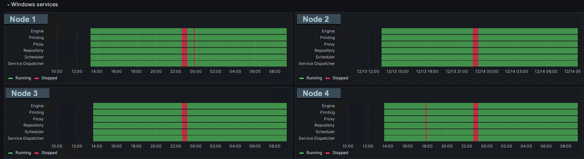
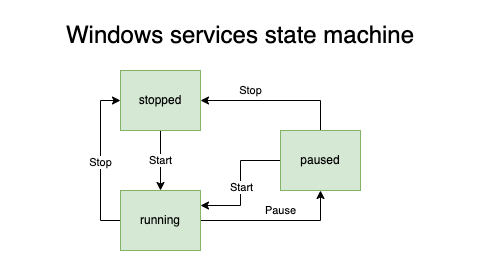

Monitor Windows services
Services on multiple servers can be monitored, and Butler can send alerts to destinations such as Slack, Teams, email, webhooks, InfluxDB, New Relic and MQTT.
Windows only
Windows services is obviously a feature only available on computers running Windows.
Butler can be installed on any platform, but the Windows service monitoring feature will only work when Butler is installed on a Windows computer.
Be the first to know when a service stops
If a Sense service stops (for whatever reason), end users will most likely be impacted one way or another.
Maybe apps will not be reloaded with new data, or users will not be able to access the hub or QMC.
Some companies have dedicated teams that monitors the IT infrastructure, but in many cases the Sense platform is monitored by the same team that develops and maintains the Sense apps.
For these teams, it is important to be notified as soon as possible when a Sense service stops - Butler can help with this.
Grafana dashboards and alerts
Butler can send service related alerts to InfluxDB, and Grafana can then be used to create dashboards and alerts based on the data in InfluxDB.
A Grafana “state timeline” chart showing the status of Qlik Sense services across 4 servers can look like below.
Note the red bar indicating that all Qlik Sense services were restarted at one point, but also note that a couple of the servers had additional, shorter outages:

With the above in place, Grafana alerts can be created that will trigger when a service stops, sending messages to incident management systems such as PagerDuty, OpsGenie and VictorOps - or to Slack, Teams, email etc.
Many servers, many services - and permissions
Butler can monitor services on multiple servers, and it can monitor multiple services on each server.
It should be noted though that each check is executed sequentially, so if you have many servers and many services, it will take some time to complete all checks.
This is especially true if you are monitoring services on remote servers, as the latency will add up.
In order to monitor services on remote servers, Butler needs to be able to connect to the remote server using WMI (Windows Management Instrumentation).
Long story short, the easiest way to set things up is to make the account used to run Butler a member of the local Administrators group on the remote server.
This should be done on all remote servers that Butler will monitor services on.
How it works
Butler uses a state machine to keep track of the status of each service.
The available states and the possible transitions between them are:

When a service check reveals that a service has changed state compared to the state stored in the state machine, Butler will send an alert message to the configured destinations.
Note 1: Windows services technically have more states than the ones shown above, but for our use case the above states are sufficient.
Note 2: The state machine is not persisted to disk, so if Butler is restarted it will not remember the state of the services it was monitoring before the restart.
Note 3: The states shown above are the ones used by Butler internally. The actual alert messages sent to the configured destinations may use different wording.
Config file settings
The configuration for Windows service monitoring is done in several sections in the Butler config file.
First, the general services configuration section defines
- Which services should be monitored on what servers.
- How often the checks should be executed.
- What destinations should receive service related alerts.
Butler:
...
...
# Monitor Windows services.
# This feature only works when Butler is running on Windows Server or desktop.
# On other OSs service monitoring will be automatically disabled.
serviceMonitor:
enable: false # Main on/off switch for service monitoring
frequency: every 5 minutes # https://bunkat.github.io/later/parsers.html
monitor:
- host: <hostname or IP> # Host name of Windows computer where services are running
services: # List of services to monitor
- name: postgresql-x64-12 # Posgress/repository db
friendlyName: Repository DB
- name: QlikSenseEngineService
friendlyName: Engine
- name: QlikSensePrintingService
friendlyName: Printing
- name: QlikSenseProxyService
friendlyName: Proxy
- name: QlikSenseRepositoryService
friendlyName: Repository
- name: QlikSenseSchedulerService
friendlyName: Scheduler
- name: QlikSenseServiceDispatcher
friendlyName: Service Dispatcher
alertDestination: # Control to thich destinations service related alerts are sent
influxDb: # Send service alerts to InfluxDB
enable: true
newRelic: # Send service alerts to New Relic
enable: true
email: # Send service alerts as emails
enable: true
mqtt: # Send service alerts as MQTT messages
enable: true
teams: # Send service alerts as MS Teams messages
enable: true
slack: # Send service alerts as Slack messages
enable: true
webhook: # Send service alerts as outbound webhooks/http calls
enable: true
...
...
Secondly, the configuration for the various destinations may also contain settings specific to service monitoring.
Not all destinations support this, but for example the Teams destination does:
Butler:
...
...
# Settings for notifications and messages sent to MS Teams
teamsNotification:
enable: true
...
...
serviceStopped:
webhookURL: <web hook URL from MS Teams>
messageType: formatted # formatted / basic. Formatted means that template file below will be used to create the message.
basicMsgTemplate: 'Windows service stopped: "{{serviceName}}" on host "{{host}}"' # Only needed if message type = basic
rateLimit: 30 # Min seconds between messages for a given Windows service. Defaults to 5 minutes.
templateFile: /path/to/teams/template/directory/service-stopped.handlebars
serviceStarted:
webhookURL: <web hook URL from MS Teams>
messageType: formatted # formatted / basic. Formatted means that template file below will be used to create the message.
basicMsgTemplate: 'Windows service started: "{{serviceName}}" on host "{{host}}"' # Only needed if message type = basic
rateLimit: 30 # Min seconds between messages for a given Windows service. Defaults to 5 minutes.
templateFile: /path/to/teams/template/directory/service-started.handlebars
...
...
Similarly, service state changes can be sent to outbound webhooks:
Butler:
...
...
# Settings for notifications and messages sent using outgoing webhooks
webhookNotification:
enable: true
...
...
serviceMonitor:
rateLimit: 15 # Min seconds between outgoing webhook calls, per Windows service that is monitored. Defaults to 5 minutes.
webhooks:
- description: 'This outgoing webhook is used to...'
webhookURL: http://host.my.domain:port/some/path # outgoing webhook that Butler will call
httpMethod: POST # GET/POST/PUT. Note that the body and URL query parameters differs depending on which method is used
- description: 'This outgoing webhook is used to...'
webhookURL: http://host.my.domain:port/some/path # outgoing webhook that Butler will call
httpMethod: PUT # GET/POST/PUT. Note that the body and URL query parameters differs depending on which method is used
- description: 'This outgoing webhook is used to...'
webhookURL: http://host.my.domain:port/some/path # outgoing webhook that Butler will call
httpMethod: GET # GET/POST/PUT. Note that the body and URL query parameters differs depending on which method is used
To get MQTT messages when a service stops or starts, configure the MQTT section of the config file:
Butler:
...
...
mqttConfig:
enable: true # Should Qlik Sense events be forwarded as MQTT messages?
brokerHost: <FQDN or IP of MQTT server>
brokerPort: 1883
azureEventGrid:
enable: false # If set to true, Butler will connect to an Azure Event Grid MQTT Broker, using brokerHost and brokerPort above
clientId: <client ID>
clientCertFile: <path to client certificate file>
clientKeyFile: <path to client key file>
...
...
serviceRunningTopic: qliksense/service_running
serviceStoppedTopic: qliksense/service_stopped
serviceStatusTopic: qliksense/service_status
...
...